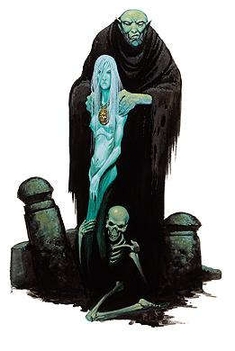

“奥喀斯，膨胀的我主，羊角的亡灵。用那头骨权杖赐予我力量！”
－头骨之王，裘诺玛格

奥喀斯的仆役将自己奉献给亡灵的恶魔大君。在他的指导下，奥喀斯的仆役逐渐被痛苦，杀戮与仇恨包围。她走在亡灵的队伍里，欣赏着他们腐败的身躯。
牧师，法师和术士是奥喀斯仆役的最佳人选，但吟游诗人，黑暗卫士或是其他兼职人物也有时会加入这位恶魔大君的阵营。
奥喀斯的仆役常常结成秘密团体。这些亡灵巫师和恋尸癖与不死生物以及恶魔一起，隐藏在城市和乡村的阴影之中。奥喀斯的仆役常常于格拉兹特的仆役或是狄摩高根的仆役处于战争状态。
生命骰：d8
需求：想要成为一名奥喀斯的仆役，角色必须满足以下条件：
阵营：邪恶
基础攻击加值：+4
技能：奥术知识2级，宗教知识2级
专长：尸巫之爱，恶魔仆役
特殊：必须能够施展亡灵法术。
特殊：想要正式成为一名奥喀斯的仆役，角色必须进行一种恐怖的仪式，包括在起码30枚头骨构成的祭坛上活活杀死一名智慧生物。
本职技能：唬骗（魅力），专注（体制），手艺（智力），躲藏（敏捷），威吓（魅力），知识（全部）（智力），潜行（敏捷），专业（感知），探知（智力），观察（感知）。
每等级技能点数：2+智力调整值
表5-15 奥喀斯的仆役
等级 基础攻击加值 坚韧豁免 反射豁免 意志豁免 特殊 魔法
1 +1 +2 +0 +2 腐臭气息 额外专长或施法者等级+1
2 +2 +3 +0 +3 恐惧之触 �D�D�D�D
3 +3 +3 +1 +3 恶魔之翼 �D�D�D�D
4 +4 +4 +1 +4 大肚腩/骷髅状貌 额外专长或施法者等级+1
5 +5 +4 +1 +4 召唤次级不死生物 �D�D�D�D
6 +6 +5 +2 +5 死之苍白 �D�D�D�D
7 +7 +5 +2 +5 恶魔之翼（随意） 额外专长或施法者等级+1
8 +8 +6 +2 +6 死亡之触 �D�D�D�D
9 +9 +6 +3 +6 召唤高级不死生物 �D�D�D�D
10 +10 +7 +3 +7 召唤飞翼夜影 额外专长或施法者等级+1
职业特性：
擅长武器及防具：奥喀斯的仆役擅长使用所有简单武器，军用武器，所有类型的盔甲及盾牌。
额外专长或魔法：当奥喀斯的仆役达到1级，4级，7级和10级时，角色可以选择获得先前职业的施法者等级或是额外专长。若角色选择获得施法者等级，她并不能得到先前职业的其他优势（如：增强呵斥亡灵的能力，超魔专长，铸造物品专长以及生命值等等），而只是单纯增强其先前职业的施法能力，即，按先前职业提高最高法术级别，每日法术量，已知法术种类，以及施法者等级。若角色在进阶前已兼职多个施法职业，她可以自由选择增强哪种职业。奥喀斯的仆役每次都可以自由选择获得施法者等级或是额外专长，无法施法的角色只能选择额外专长。
腐臭气息（特殊）：奥喀斯的仆役可以自由释放出10尺的腐臭气息。进入其范围的活物（不包括奥喀斯的仆役）都必须通过坚韧检定（DC 10+奥喀斯仆役的级别+奥喀斯仆役的体质调整值），否则必须在攻击骰，伤害骰，豁免骰，技能检定以及属性检定上承受-2的不利，持续时间为每奥喀斯仆役等级1轮。进入此范围的不死生物将视奥喀斯的仆役为不死生物。
恐惧之触（特殊能力）：每日3次，奥喀斯2级以上的仆役可以施展如同法术“惊恐术”的能力（施法者等级10）
恶魔之翼（生物特性）：每日一次，奥喀斯3级以上的仆役可以从背脊上生长出巨大的黑翼。这对翅膀可以使角色以其正常行走速度飞行，灵活性一般。恶魔之翼能持续一小时，可通过一个标准动作收回。当角色达到7级时，可以随意施展恶魔之翼，持续时间无限制。
大肚腩/骷髅状貌（生物特性）：奥喀斯4级的仆役必须选择成为她主人一样臃肿，或是和不死生物一样憔悴。角色依选择获得畸形变化[肥胖]或是畸形变化[憔悴]
召唤亡灵（特殊能力）：每日一次，奥喀斯5级以上的仆役可以召唤1d4名食尸鬼，1d3名黯影，1名尸妖，或是1名缚灵，如同施展“召唤怪物术”（施法者等级取决于角色的等级）。当角色达到9级时，可以召唤1d3名木乃伊，1名幽灵，1名魔魂尸，1名吸血鬼或是1名幽魂。若角色决定召唤吸血鬼或是幽魂，其级别为角色奥喀斯仆役的等级减一。
死之苍白（生物特性）：每日一次，奥喀斯6级以上的仆役可以变形成一名类人不死生物，如同施展“变身术”。在这种形态下，角色获得25尺恐惧氛围（如同6级施法者施展“恐惧术”）影响非异界的活物。此能力持续时间为每等级1分钟。
死亡之触（特殊能力）：被奥喀斯8级以上的仆役接触的生物必须通过坚韧检定（DC 10+奥喀斯仆役等级+奥喀斯溥仪的魅力调整值），失败者立即死亡。
召唤飞翼夜影（特殊能力）：奥喀斯10级以上的仆役可以每周召唤一名飞翼夜影，如同施展“召唤怪物术”（施法者等级15）。